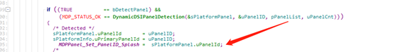
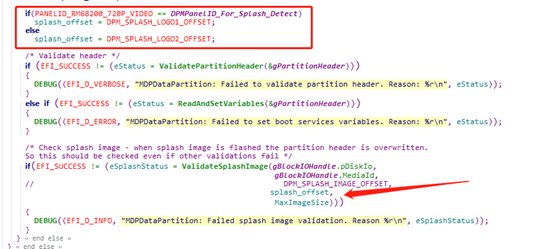
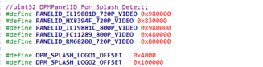
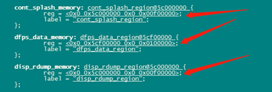

概要
基于高通2290,android 12,xbl兼容不通分辨率的logo
方法
logo制作,logo_gen.py
使用如下pyton文件制作logo,命令为 python logo_gen.py 720p.bmp 800p.bmp
注意py文件的logo2_offset 偏移地址
#!/usr/bin/python
#==============================================================================
#/** @file splash_logo_gen.py
#
# GENERAL DESCRIPTION
# Packages a custom splash image bmp into a loadable splash partition image
# Fastboot command:
# fastboot flash splash <img>
#
# Copyright (c) 2016 Qualcomm Technologies, Inc .
# All Rights Reserved.
# Confidential and Proprietary - Qualcomm Technologies, Inc.
#==============================================================================
#==============================================================================
# Copyright (c) 2013,2015, The Linux Foundation. All rights reserved.
#
# Redistribution and use in source and binary forms, with or without
# modification, are permitted provided that the following conditions are
# met:
# * Redistributions of source code must retain the above copyright
# notice, this list of conditions and the following disclaimer.
# * Redistributions in binary form must reproduce the above
# copyright notice, this list of conditions and the following
# disclaimer in the documentation and/or other materials provided
# with the distribution.
# * Neither the name of The Linux Foundation nor the names of its
# contributors may be used to endorse or promote products derived
# from this software without specific prior written permission.
#
# THIS SOFTWARE IS PROVIDED "AS IS" AND ANY EXPRESS OR IMPLIED
# WARRANTIES, INCLUDING, BUT NOT LIMITED TO, THE IMPLIED WARRANTIES OF
# MERCHANTABILITY, FITNESS FOR A PARTICULAR PURPOSE AND NON-INFRINGEMENT
# ARE DISCLAIMED. IN NO EVENT SHALL THE COPYRIGHT OWNER OR CONTRIBUTORS
# BE LIABLE FOR ANY DIRECT, INDIRECT, INCIDENTAL, SPECIAL, EXEMPLARY, OR
# CONSEQUENTIAL DAMAGES (INCLUDING, BUT NOT LIMITED TO, PROCUREMENT OF
# SUBSTITUTE GOODS OR SERVICES; LOSS OF USE, DATA, OR PROFITS; OR
# BUSINESS INTERRUPTION) HOWEVER CAUSED AND ON ANY THEORY OF LIABILITY,
# WHETHER IN CONTRACT, STRICT LIABILITY, OR TORT (INCLUDING NEGLIGENCE
# OR OTHERWISE) ARISING IN ANY WAY OUT OF THE USE OF THIS SOFTWARE, EVEN
# IF ADVISED OF THE POSSIBILITY OF SUCH DAMAGE.
#===========================================================================
import sys
import os
## make a image
def MakeLogoImage(out):
global imgconv
#infile = "logo.bmp" #default file name
num = len(sys.argv)
if num != 3:
ShowUsage()
sys.exit(1); # error arg
infile = sys.argv[1]
infile2 = sys.argv[2]
outfile = open(out, "wb")
filler = b'\0'*0x4000
outfile.write(filler)
body = GetBMPData(infile)
outfile.write(body)
logo2_offset = 1024*1024
body2 = GetBMPData(infile2)
outfile.seek(logo2_offset)
outfile.write(body2)
outfile.close()
## usage
def ShowUsage():
print("**********************************************")
print("\nUsage:\npython splash_logo_gen2.py <image 720p file> <image 800p file>")
print("\nSupported image formats:\n * 8-bit BMP\n * 24-bit BMP\n * 32-bit BMP")
print("\n**********************************************")
## get BMP data from input file. if input is png convert to bmp
def GetBMPData(infile):
if os.access(infile, os.R_OK) != True:
print("Error: Input file <%s> is not readable" % infile)
ShowUsage()
sys.exit(2); # error file
with open(infile, mode='rb') as imgfile:
data = imgfile.read()
return data
##main
if __name__ == "__main__":
MakeLogoImage("splash.img")
合入如下补丁
---
Include/Library/DisplayABLInterface.h | 2 +-
Include/Library/MDPSystem.h | 7 +-
Include/Library/QcomLib.h | 13 +
Library/MDPLib/DisplayABLInterface.c | 86 +---
Library/MDPLib/MDPDataPartition.c | 768 ++++++++++++++++++++++++++++++++++
Library/MDPLib/MDPDataPartition_i.h | 123 ++++++
Library/MDPLib/MDPLib.c | 17 +-
Library/MDPLib/MDPLib.inf | 1 +
Library/MDPLib/MDPSystem.c | 30 +-
Library/MDPLib/MDPSystemBoot.c | 37 +-
Library/QcomLib/BitmapUtils.c | 219 +++++++++-
Sdm660Pkg/LA/uefiplat.cfg | 3 +
12 files changed, 1224 insertions(+), 82 deletions(-)
create mode 100755 Library/MDPLib/MDPDataPartition.c
create mode 100755 Library/MDPLib/MDPDataPartition_i.h
diff --git a/Include/Library/DisplayABLInterface.h b/Include/Library/DisplayABLInterface.h
index 4ce61ef..a52ceb0 100755
--- a/Include/Library/DisplayABLInterface.h
+++ b/Include/Library/DisplayABLInterface.h
@@ -305,7 +305,7 @@ EFI_STATUS Display_ABL_GetContinuousSplashInfo(UINT32 *pAddr, UINT32 *pSize);
* \retval None
*
****************************************************************************/
-void Display_ABL_StorePLLCodes(void);
+//void Display_ABL_StorePLLCodes(void);
/****************************************************************************
diff --git a/Include/Library/MDPSystem.h b/Include/Library/MDPSystem.h
index 52db4ca..16b1338 100755
--- a/Include/Library/MDPSystem.h
+++ b/Include/Library/MDPSystem.h
@@ -73,12 +73,12 @@ typedef enum
/* MDP Variable Flag Type
*/
-typedef enum
+/*typedef enum
{
MDP_VARIABLE_FLAG_NONE = 0,
MDP_VARIABLE_FLAG_NON_VOLATILE = 1,
MDP_VARIABLE_FLAG_MAX,
-} MDPVariableFlagType;
+} MDPVariableFlagType;*/
/*===========================================================================
@@ -242,7 +242,8 @@ EFI_STATUS MDP_GetBootServiceVariableSize(CHAR16 *pVariableName, UINTN *puSize);
* \retval EFI_STATUS
*
****************************************************************************/
-EFI_STATUS MDP_SetBootServiceVariable(CHAR16 *pVariableName, void *pValue, UINTN uSize, UINT32 uFlags);
+EFI_STATUS MDP_SetBootServiceVariable(CHAR16 *pVariableName, void *pValue, UINTN uSize);
+//EFI_STATUS MDP_SetBootServiceVariable(CHAR16 *pVariableName, void *pValue, UINTN uSize, UINT32 uFlags);
/****************************************************************************
diff --git a/Include/Library/QcomLib.h b/Include/Library/QcomLib.h
index 961425e..227c945 100755
--- a/Include/Library/QcomLib.h
+++ b/Include/Library/QcomLib.h
@@ -845,6 +845,19 @@ ConnectByProtocol (
EFI_STATUS
LoadDebugToolsFv (VOID);
+/**
+ Validate splash screen storage info
+
+ @retval EFI_STATUS
+**/
+EFI_STATUS
+ValidateSplashImage(
+ IN EFI_DISK_IO_PROTOCOL *pDiskIo, //Disk Handle
+ IN UINT32 MediaId, //Media ID
+ IN UINT32 Address, //Splash image offset in partition
+ IN UINT32 MaxSize //Splash image max size
+ );
+
/** Enter EDL mode */
VOID EnterEDLMode ( VOID );
diff --git a/Library/MDPLib/DisplayABLInterface.c b/Library/MDPLib/DisplayABLInterface.c
index 06310ec..62718ea 100755
--- a/Library/MDPLib/DisplayABLInterface.c
+++ b/Library/MDPLib/DisplayABLInterface.c
@@ -58,8 +58,9 @@
#include "MDPLib_i.h"
#include "MDPSystem.h"
#include "MDPPlatformLib.h"
+#include "MDPDataPartition_i.h"
#include "DisplayABLInterface.h"
-#include "HALDSILib.h"
+//#include "HALDSILib.h"
/*=========================================================================
Default Defines
@@ -961,12 +962,14 @@ static void CheckTargetPanelSupport()
pABLContext->pDTInfoArray = psPanelDTInfo;
}
- if (EFI_SUCCESS != (eStatus = MDP_SetBootServiceVariable(DISPVAR_SUPPORTED_PANEL_COUNT, &uPanelCount, sizeof(uPanelCount), 0)))
- {
+ //if (EFI_SUCCESS != (eStatus = MDP_SetBootServiceVariable(DISPVAR_SUPPORTED_PANEL_COUNT, &uPanelCount, sizeof(uPanelCount), 0)))
+ if (EFI_SUCCESS != (eStatus = MDP_SetBootServiceVariable(DISPVAR_SUPPORTED_PANEL_COUNT, &uPanelCount, sizeof(uPanelCount))))
+ {
DEBUG((EFI_D_WARN,"MDPLib: Failed to set boot service variable <%s>. Returned %d\n", DISPVAR_SUPPORTED_PANEL_COUNT, eStatus));
}
- if (EFI_SUCCESS != (eStatus = MDP_SetBootServiceVariable(DISPVAR_SUPPORTED_PANEL_LIST, pPanels, AsciiStrSize(pPanels), 0)))
+ //if (EFI_SUCCESS != (eStatus = MDP_SetBootServiceVariable(DISPVAR_SUPPORTED_PANEL_LIST, pPanels, AsciiStrSize(pPanels), 0)))
+ if (EFI_SUCCESS != (eStatus = MDP_SetBootServiceVariable(DISPVAR_SUPPORTED_PANEL_LIST, pPanels, AsciiStrSize(pPanels))))
{
DEBUG((EFI_D_WARN,"MDPLib: Failed to set boot service variable <%s>. Returned %d\n", DISPVAR_SUPPORTED_PANEL_LIST, eStatus));
}
@@ -1097,7 +1100,8 @@ void Display_ABL_SetPanelConfiguration(MDPPlatformPanelType eSelected)
UpdatePanelConfiguration(eSelected, pConfigStr);
/* Set panel configuration variable */
- if (EFI_SUCCESS != (eStatus = MDP_SetBootServiceVariable(DISPVAR_PANEL_CONFIGURATION, pConfigStr, AsciiStrLen(pConfigStr)+1, 0)))
+ //if (EFI_SUCCESS != (eStatus = MDP_SetBootServiceVariable(DISPVAR_PANEL_CONFIGURATION, pConfigStr, AsciiStrLen(pConfigStr)+1, 0)))
+ if (EFI_SUCCESS != (eStatus = MDP_SetBootServiceVariable(DISPVAR_PANEL_CONFIGURATION, pConfigStr, AsciiStrLen(pConfigStr)+1)))
{
DEBUG((EFI_D_WARN,"MDPLib: Failed to set boot service variable <%s>. Returned %d\n", DISPVAR_PANEL_CONFIGURATION, eStatus));
}
@@ -1301,10 +1305,13 @@ EFI_STATUS Display_ABL_SetProperty (EFI_DISPLAY_ABL_PROPERTY_TYPE ePropertyTyp
eStatus = EFI_INVALID_PARAMETER;
}
- else if (EFI_SUCCESS != (eStatus = MDP_Display_SetVariable(DISPVAR_PANEL_OVERRIDE,
+ else if (EFI_SUCCESS != (eStatus = MDP_SetBootServiceVariable(DISPVAR_PANEL_OVERRIDE,
+ pData,
+ uDataSize)))
+ /*else if (EFI_SUCCESS != (eStatus = MDP_Display_SetVariable(DISPVAR_PANEL_OVERRIDE,
(UINT8 *)pData,
(uDataSize / (sizeof(CHAR8))),
- 0)))
+ 0)))*/
{
DEBUG((EFI_D_WARN,"Display: Failed to set boot service variable <%s>. Returned %d\n", DISPVAR_PANEL_OVERRIDE, eStatus));
}
@@ -1312,6 +1319,9 @@ EFI_STATUS Display_ABL_SetProperty (EFI_DISPLAY_ABL_PROPERTY_TYPE ePropertyTyp
{
eStatus = EFI_SUCCESS;
}
+
+ /* Save it to partition */
+ MDP_DataPartitionExit();
}
break;
@@ -1388,68 +1398,6 @@ EFI_STATUS Display_ABL_GetProperty (EFI_DISPLAY_ABL_PROPERTY_TYPE ePropertyTyp
/****************************************************************************
*
-** FUNCTION: Display_ABL_StorePLLCodes()
-*/
-/*!
-* \brief
-* Display ABL to store pll codes
-*
- @param None
-*
-* \retval None
-*
-****************************************************************************/
-void
-Display_ABL_StorePLLCodes(void)
-{
- UINT32 uSplashAddr = 0;
- UINT32 uSplashSize = 0;
- uintPtr uPllCodesAddr = 0;
- UINT32 uPllCodesMaxSize = MDP_MAX_PLLCODES_SIZE;
- void *pBuffer = NULL;
- MDP_Status eStatus = MDP_STATUS_FAILED;
- MDP_PLLCodesInfo sPllCodesInfo[MDP_MAX_NUM_DSI_DEVICE];
-
- /* Save PLL codes to last 4K of framebuffer for kernel to read */
- if((EFI_SUCCESS == Display_ABL_GetContinuousSplashInfo(&uSplashAddr, &uSplashSize)) &&
- (uSplashSize > uPllCodesMaxSize))
- {
- uPllCodesAddr = uSplashAddr + uSplashSize;
- pBuffer = (void*)uPllCodesAddr;
-
- if (sizeof(sPllCodesInfo) > uPllCodesMaxSize)
- {
- MDP_Log_Message(MDP_LOGLEVEL_WARN, "Error: Not enough splash memory to store pll codes\n");
- }
- else
- {
- uint32 i;
-
- MDP_OSAL_MEMSET(&sPllCodesInfo[0], 0, sizeof(sPllCodesInfo));
-
- for (i = 0; i < MDP_MAX_NUM_DSI_DEVICE; i++)
- {
- if (MDP_STATUS_OK == DSIDriver_GetCalibrationCodes(i, &sPllCodesInfo[i]))
- {
- eStatus = MDP_STATUS_OK;
- }
- }
-
- if (MDP_STATUS_OK == eStatus)
- {
- /* copy pll codes to begining of splash memory*/
- MDP_OSAL_MEMCPY((void *) pBuffer, sPllCodesInfo, sizeof(sPllCodesInfo));
- }
- else
- {
- MDP_Log_Message(MDP_LOGLEVEL_WARN, "Error: fail to get DSI pll codes\n");
- }
- }
- }
-}
-
-/****************************************************************************
-*
** FUNCTION: Display_ABL_SetMode()
*/
/*!
diff --git a/Library/MDPLib/MDPDataPartition.c b/Library/MDPLib/MDPDataPartition.c
new file mode 100755
index 0000000..d5c84cb
--- /dev/null
+++ b/Library/MDPLib/MDPDataPartition.c
@@ -0,0 +1,768 @@
+/*=============================================================================
+
+ File: MDPDataPartition.c
+
+ Source file for MDP Data Partition Manager
+
+
+ Copyright (c) 2016 Qualcomm Technologies, Inc. All Rights Reserved.
+ Qualcomm Technologies Proprietary and Confidential.
+=============================================================================*/
+#include <Uefi.h>
+#include <Library/UefiLib.h>
+#include <Library/ArmLib.h>
+#include <Library/QcomLib.h>
+#include <Library/UefiRuntimeServicesTableLib.h>
+#include <Library/UncachedMemoryAllocationLib.h>
+#include "MDPDataPartition_i.h"
+#include "MDPSystem.h"
+#include "DisplayABLInterface.h"
+
+/*=========================================================================
+ Default Defines
+==========================================================================*/
+
+
+/*=========================================================================
+ Local static Variables
+==========================================================================*/
+
+/*
+* Partition Header info
+*/
+static DPM_HeaderType gPartitionHeader;
+
+/*
+* Block IO Handles for the data partition
+*/
+static DPM_IOHandleType gBlockIOHandle;
+
+/*
+* List of display variables that are persistent - terminated by empty string
+*/
+static CHAR16 gPersistentVariables[DPM_VARIABLES_MAX][DPM_VARIABLE_NAME_MAX_LEN] = {
+ DISPVAR_PANEL_OVERRIDE,
+ L"",
+};
+
+/*=========================================================================
+ Public APIs
+==========================================================================*/
+extern EFI_GUID gQcomTokenSpaceGuid;
+extern EFI_GUID gEfiEmmcUserPartitionGuid;
+extern EFI_GUID gEfiUfsLU4Guid;
+
+/*=========================================================================
+ Local static Functions
+==========================================================================*/
+
+/* Forward declarations */
+static uint8 CalculateChecksum(void *pData, uint32 uSize);
+static EFI_STATUS SaveVariables(void);
+
+/****************************************************************************
+*
+** FUNCTION: GetVariableInternal()
+*/
+/*!
+* \brief
+* Helper function to get a boot service variable data. The function checks
+* data size and allocates memory accordingly and returns data & data size.
+*
+* \param [in] pVariableName - Name of the boot service variable
+* [out] ppValue - data pointer
+* [out] puSize - data size
+*
+* \retval EFI_STATUS
+*
+****************************************************************************/
+static EFI_STATUS GetVariableInternal(CHAR16 *pVariableName, void **ppValue, uint32 *puSize)
+{
+ EFI_STATUS eStatus = EFI_SUCCESS;
+ UINTN uBufferSize = 0;
+
+ /*
+ * The variable is queried as follows.
+ * Step 1: Get data size for the Variable
+ * Step 2: Allocate memory
+ * Step 3: Get variable using the pointer to the allocated memory
+ */
+
+ *puSize = 0;
+
+ if (EFI_SUCCESS != (eStatus = MDP_GetBootServiceVariableSize(pVariableName, &uBufferSize)))
+ {
+ /* Variable not found. Dont print error since this could be expected in normal situations
+ * if a feature is not used
+ */
+ }
+ else if (NULL == (*ppValue = UncachedAllocateZeroPool(uBufferSize)))
+ {
+ DEBUG((EFI_D_ERROR, "MDPDataPartition: Failed to allocate %d bytes for variable <%s>\n", uBufferSize, pVariableName));
+ eStatus = EFI_OUT_OF_RESOURCES;
+ }
+ else if (EFI_SUCCESS != (eStatus = MDP_GetBootServiceVariable(pVariableName, *ppValue, &uBufferSize)))
+ {
+ /* Since variable exists and buffer was allocated this is an error */
+ DEBUG((EFI_D_ERROR, "MDPDataPartition: Failed to get boot service variable <%s>. Reason %r\n", pVariableName, eStatus));
+
+ /* Free memory*/
+ UncachedSafeFreePool(*ppValue);
+ }
+ else
+ {
+ *puSize = (uint32) uBufferSize;
+ }
+
+ return eStatus;
+}
+
+/****************************************************************************
+*
+** FUNCTION: EnumeratePartitions()
+*/
+/*!
+* \brief
+* Enumerates the display partition memory and gets the block IO handles
+*
+* \param [out] pHandles - Array of handles
+* [in] uMaxHandles - Max number of handles that the array can hold
+* [out] pNumHandles - Actual number of handles retrieved
+*
+* \retval EFI_STATUS
+*
+****************************************************************************/
+static EFI_STATUS EnumeratePartitions(HandleInfo *pHandles, UINT32 uMaxHandles, UINT32* pNumHandles)
+{
+ UINT32 Attribs = 0;
+ EFI_STATUS eStatus;
+ PartiSelectFilter HandleFilter;
+ UINT32 HandleCount;
+
+ /* Check for EMMC */
+ Attribs |= BLK_IO_SEL_MATCH_ROOT_DEVICE;
+ HandleCount = uMaxHandles;
+ HandleFilter.PartitionType = 0;
+ HandleFilter.VolumeName = 0;
+ HandleFilter.RootDeviceType = &gEfiEmmcUserPartitionGuid;
+
+ /* Get Handles */
+ eStatus = GetBlkIOHandles(Attribs, &HandleFilter, pHandles, &HandleCount);
+
+ /* If EMMC failed, then check for UFS */
+ if (EFI_ERROR(eStatus) || HandleCount == 0)
+ {
+ HandleCount = uMaxHandles;
+ HandleFilter.PartitionType = 0;
+ HandleFilter.VolumeName = 0;
+ HandleFilter.RootDeviceType = &gEfiUfsLU4Guid;
+
+ eStatus = GetBlkIOHandles(Attribs, &HandleFilter, pHandles, &HandleCount);
+ }
+ if (EFI_SUCCESS == eStatus)
+ {
+ /* Block IO handles retrieved successfully*/
+ *pNumHandles = HandleCount;
+ }
+
+ return eStatus;
+}
+
+/****************************************************************************
+*
+** FUNCTION: CalculateChecksum()
+*/
+/*!
+* \brief
+* Calculate the checksum for specified data. The 8-bit addition of all
+* data bytes and the checksum value will be 0.
+*
+* \param [in] pData - Data pointer
+* [in] uSize - Data size
+*
+* \retval checksum value
+*
+****************************************************************************/
+static uint8 CalculateChecksum(void *pData, uint32 uSize)
+{
+ uint32 sum = 0;
+ uint32 checksum = 0;
+ uint32 i;
+
+ /* add all bytes*/
+ for (i = 0; i < uSize; i++)
+ {
+ sum += ((uint8 *)pData)[i];
+ }
+ /* checksum*/
+ checksum = 256 - (sum & 0xFF);
+
+ /* only the LSB will have non-zero value*/
+ return (uint8)(checksum&0xFF);
+}
+
+/****************************************************************************
+*
+** FUNCTION: InitializeHeader()
+*/
+/*!
+* \brief
+* Initialize the Partition header structure with Magic string and
+* version
+*
+* \param [in] pHeader - Pointer to header structure
+*
+* \retval None
+*
+****************************************************************************/
+static void InitializeHeader(DPM_HeaderType *pHeader)
+{
+ /* Zero */
+ MDP_OSAL_MEMZERO(pHeader, sizeof(DPM_HeaderType));
+
+ /* Magic */
+ pHeader->magic = DPM_MAGIC;
+
+ /* Version */
+ pHeader->versionMajor = DPM_MAJOR_VERSION;
+ pHeader->versionMinor = DPM_MINOR_VERSION;
+
+}
+
+/****************************************************************************
+*
+** FUNCTION: ValidateVariableHeader()
+*/
+/*!
+* \brief
+* Validate the variable header
+*
+* \param [in] pVarHdr - Pointer to header structure
+*
+* \retval EFI_STATUS
+*
+****************************************************************************/
+static EFI_STATUS ValidateVariableHeader(DPM_VariableInfoType *pVarHdr)
+{
+ EFI_STATUS eStatus = EFI_SUCCESS;
+ uint32 uDataEnd = pVarHdr->dataOffset + pVarHdr->dataSize;
+
+ /* Validate offset & size */
+ if ((uDataEnd <= pVarHdr->dataOffset) || //checks datasize & uDataEnd wrap around
+ (DPM_VARDATA_START > pVarHdr->dataOffset) ||
+ (DPM_VARDATA_END <= pVarHdr->dataOffset) ||
+ (DPM_VARDATA_START > uDataEnd) ||
+ (DPM_VARDATA_END <= uDataEnd))
+ {
+ /* Data out of bounds - Error */
+ DEBUG((EFI_D_WARN, "MDPDataPartition: Failed header validation for <%a>: offset %d size %d\n", pVarHdr->name,
+ pVarHdr->dataSize, pVarHdr->dataOffset));
+
+ eStatus = EFI_VOLUME_CORRUPTED;
+ }
+ /* Make sure variable name is null terminated */
+ else if ('\0' != pVarHdr->name[DPM_VARIABLE_NAME_MAX_LEN - 1])
+ {
+ /* Name not null terminated */
+ DEBUG((EFI_D_WARN, "MDPDataPartition: Failed header validation for <%a>: name not terminated\n", pVarHdr->name));
+
+ eStatus = EFI_VOLUME_CORRUPTED;
+ }
+
+ return eStatus;
+}
+
+/****************************************************************************
+*
+** FUNCTION: ValidatePartitionHeader()
+*/
+/*!
+* \brief
+* Validate the partition header
+*
+* \param [in] pHeader - Pointer to header structure
+*
+* \retval EFI_STATUS
+*
+****************************************************************************/
+static EFI_STATUS ValidatePartitionHeader(DPM_HeaderType *pHeader)
+{
+ EFI_STATUS eStatus = EFI_VOLUME_CORRUPTED;
+
+ /*Check Magic */
+ if (DPM_MAGIC != pHeader->magic)
+ {
+ /* Magic check failed */
+ DEBUG((EFI_D_VERBOSE, "MDPDataPartition: Failed partition header validation: Magic 0x%x\n",
+ pHeader->magic));
+ }
+ else if (DPM_MAJOR_VERSION != pHeader->versionMajor)
+ {
+ /* Major version mismatch */
+ DEBUG((EFI_D_WARN, "MDPDataPartition: Failed partition header validation: Major Version %d (Expected = %d)\n",
+ pHeader->versionMajor, DPM_MAJOR_VERSION));
+ }
+ else if (DPM_MINOR_VERSION < pHeader->versionMinor)
+ {
+ /* Minor version mismatch */
+ DEBUG((EFI_D_WARN, "MDPDataPartition: Failed partition header validation: Minor Version %d (Expected > %d)\n",
+ pHeader->versionMinor, DPM_MINOR_VERSION));
+ }
+ else if (DPM_VARDATA_END < (pHeader->size + DPM_VARDATA_START))
+ {
+ /* Possible corruption - data size overrun */
+ DEBUG((EFI_D_WARN, "MDPDataPartition: Failed partition header validation: Data size %d exceeds limit.\n",
+ pHeader->size));
+ }
+ else if (DPM_VARIABLES_MAX < pHeader->count)
+ {
+ /* Possible corruption - variable count over max */
+ DEBUG((EFI_D_WARN, "MDPDataPartition: Failed partition header validation: Variable count %d exceeds %d\n",
+ pHeader->count, DPM_VARIABLES_MAX));
+ }
+ else
+ {
+ eStatus = EFI_SUCCESS;
+ }
+ return eStatus;
+}
+
+/****************************************************************************
+*
+** FUNCTION: ReadVariable()
+*/
+/*!
+* \brief
+* Reads variable from partition & validates checksum
+* It allocates memory for data. The caller should free it when done.
+*
+* \param [in] pVarHdr - Variable header
+* [out] ppVarData - Data pointer
+*
+* \retval EFI_STATUS
+*
+****************************************************************************/
+static EFI_STATUS ReadVariable(DPM_VariableInfoType *pVarHdr, void** ppVarData)
+{
+ EFI_STATUS eStatus = EFI_SUCCESS;
+
+ if (NULL == gBlockIOHandle.pDiskIo)
+ {
+ DEBUG((EFI_D_WARN, "MDPDataPartition: ReadVariable Failed. DiskIO is not initialized yet!\n"));
+ eStatus = EFI_OUT_OF_RESOURCES;
+ }
+ else
+ {
+ void *pData = NULL;
+ EFI_DISK_IO_PROTOCOL *pDiskIo;
+ uint32 checksum;
+ UINT32 mediaId;
+
+ pDiskIo = gBlockIOHandle.pDiskIo;
+ mediaId = gBlockIOHandle.MediaId;
+
+ /*Verify Variable*/
+ if (EFI_SUCCESS != (eStatus = ValidateVariableHeader(pVarHdr)))
+ {
+ /* The variable header is corrupted */
+ }
+ /* Allocate Data */
+ else if (NULL == (pData = UncachedAllocateZeroPool(pVarHdr->dataSize)))
+ {
+ DEBUG((EFI_D_ERROR, "MDPDataPartition: Failed to allocate %d bytes for variable <%a>\n",
+ pVarHdr->dataSize, pVarHdr->name));
+
+ /* Unable to allocate buffer */
+ eStatus = EFI_OUT_OF_RESOURCES;
+ }
+ else
+ {
+ /* Read data */
+ if (EFI_SUCCESS != (eStatus = pDiskIo->ReadDisk(pDiskIo, mediaId, pVarHdr->dataOffset, pVarHdr->dataSize, pData)))
+ {
+ DEBUG((EFI_D_ERROR, "MDPDataPartition: Failed to read data for variable <a> from partition: Reason %r\n",
+ pVarHdr->name, eStatus));
+ }
+ /* Calculate Checksum */
+ else if (pVarHdr->checksum != (checksum = CalculateChecksum(pData, pVarHdr->dataSize)))
+ {
+ /* Checksum mismatch */
+ DEBUG((EFI_D_ERROR, "Failed checksum validation for variable <%a>. Expected %d Actual %d\n", pVarHdr->name,
+ checksum, pVarHdr->checksum));
+
+ eStatus = EFI_VOLUME_CORRUPTED;
+ }
+ else
+ {
+ /* Read Variable succeeded. Update data pointer*/
+ *ppVarData = pData;
+
+ eStatus = EFI_SUCCESS;
+ }
+
+ if (EFI_SUCCESS != eStatus)
+ {
+ /* Failed after memory was allocated. So free memory here*/
+ UncachedSafeFreePool(pData);
+
+ *ppVarData = NULL;
+ }
+ }
+ }
+
+ return eStatus;
+}
+
+
+/****************************************************************************
+*
+** FUNCTION: ReadAndSetVariables()
+*/
+/*!
+* \brief
+* Parse the partition header structure to get all persistent variables
+* and set boot services variable
+*
+* \param [in] pHeader - Pointer to header structure
+*
+* \retval EFI_STATUS
+*
+****************************************************************************/
+static EFI_STATUS ReadAndSetVariables(DPM_HeaderType *pHeader)
+{
+ EFI_STATUS eStatus = EFI_SUCCESS;
+
+ if (NULL == gBlockIOHandle.pDiskIo)
+ {
+ DEBUG((EFI_D_WARN, "MDPDataPartition: ReadAndSetVariables Failed:. DiskIO is not initialized yet!\n"));
+ eStatus = EFI_OUT_OF_RESOURCES;
+ }
+ else
+ {
+ void *pVarData = NULL;
+ uint32 i = 0;
+ DPM_VariableInfoType *pVarHdr;
+ CHAR16 sVarName[DPM_VARIABLE_NAME_MAX_LEN];
+
+ /* Iterate through the list of persistent variables*/
+ for (i = 0; i < pHeader->count; i++)
+ {
+ pVarHdr = &pHeader->variableInfo[i];
+
+ if (EFI_SUCCESS != ReadVariable(pVarHdr, &pVarData))
+ {
+ /* Variable read failed. Ignore and continue*/
+ }
+ else
+ {
+ MDP_OSAL_MEMZERO(sVarName, sizeof(sVarName));
+ AsciiStrToUnicodeStr(pVarHdr->name, sVarName);
+
+ /* Set Boot Service Variable */
+ eStatus = MDP_SetBootServiceVariable(sVarName, pVarData, pVarHdr->dataSize);
+
+ if (EFI_SUCCESS != eStatus)
+ {
+ DEBUG((EFI_D_WARN, "MDPDataPartition: Failed to set variable <%s>. Reason %r\n", sVarName, eStatus));
+ }
+
+ /* Free Pool*/
+ UncachedSafeFreePool(pVarData);
+ }
+
+ pVarData = NULL;
+ }
+ }
+
+ return eStatus;
+}
+
+/****************************************************************************
+*
+** FUNCTION: SaveVariables()
+*/
+/*!
+* \brief
+* Get all boot service variables that are marked for persistency and save
+* them in the partition
+*
+* \param None
+*
+* \retval EFI_STATUS
+*
+****************************************************************************/
+static EFI_STATUS SaveVariables()
+{
+ EFI_STATUS eStatus = EFI_SUCCESS;
+
+ if (NULL == gBlockIOHandle.pDiskIo)
+ {
+ DEBUG((EFI_D_WARN, "MDPDataPartition: SaveVariables Failed. DiskIO is not initialized yet!\n"));
+ eStatus = EFI_OUT_OF_RESOURCES;
+ }
+ else
+ {
+ VOID *pBuffer = NULL;
+ uint32 uVarIndex = 0;
+ uint32 i = 0;
+ uint32 dataStart;
+ uint32 uChecksum;
+ EFI_DISK_IO_PROTOCOL *pDiskIo;
+ UINT32 mediaId;
+ DPM_VariableInfoType *psVarInfo;
+ uint32 uDataSize;
+ DPM_HeaderType sHeader;
+ CHAR16 *pVariableName;
+ uint32 uAvailable;
+
+ pDiskIo = gBlockIOHandle.pDiskIo;
+ mediaId = gBlockIOHandle.MediaId;
+
+ /* Initialize header structure */
+ InitializeHeader(&sHeader);
+
+ dataStart = DPM_VARDATA_START;
+ uAvailable = DPM_VARDATA_END - DPM_VARDATA_START;
+
+ /*
+ * Traverse thru LUT and get all variables.
+ * List terminated by an empty string
+ */
+ for (i = 0; i < DPM_VARIABLES_MAX; i++)
+ {
+ pVariableName = gPersistentVariables[i];
+
+ if (*pVariableName == L'\0')
+ {
+ /* Done iterating through variables - Exit now */
+ break;
+ }
+
+ if (DPM_VARDATA_END <= dataStart)
+ {
+ DEBUG((EFI_D_ERROR, "MDPDataPartition: Failed to save all display variables. Ran out of space after %d variables\n", i));
+ break;
+ }
+
+ /*update available size */
+ uAvailable = DPM_VARDATA_END - dataStart;
+
+ /* Get Environment Variable */
+ eStatus = GetVariableInternal(pVariableName, &pBuffer, &uDataSize);
+
+ /* Check if variable is set. If not, just move on to the next variable */
+ if ((EFI_SUCCESS == eStatus) &&
+ (NULL != pBuffer) &&
+ (0 < uDataSize))
+ {
+ uChecksum = CalculateChecksum(pBuffer, uDataSize);
+
+ psVarInfo = &sHeader.variableInfo[uVarIndex];
+
+ /* Name */
+ UnicodeStrToAsciiStr(pVariableName, psVarInfo->name);
+
+ /* Offset */
+ psVarInfo->dataOffset = dataStart;
+
+ /* Data Size */
+ psVarInfo->dataSize = uDataSize;
+
+ /* Checksum */
+ psVarInfo->checksum = uChecksum;
+
+ /* Check if data size is too large */
+ if (uDataSize > uAvailable)
+ {
+ DEBUG((EFI_D_ERROR, "MDPDataPartition: Failed to save variable <%a>. Data size(%d) > Available(%d)\n",
+ psVarInfo->name, uDataSize, uAvailable));
+
+ /* continue with next variable */
+ }
+ /* Write data */
+ else if (EFI_SUCCESS != (eStatus = pDiskIo->WriteDisk(pDiskIo, mediaId, dataStart, uDataSize, pBuffer)))
+ {
+ /* Write to disk failed. Break out */
+ DEBUG((EFI_D_ERROR, "MDPDataPartition: Failed to write variable %d bytes to partition offset 0x%x. Reason: %r\n",
+ uDataSize, dataStart, eStatus));
+
+ }
+ else
+ {
+ /* Next variable index */
+ uVarIndex++;
+
+ /* data offset for next variable. */
+ dataStart += uDataSize;
+
+ /* Adjust alignment */
+ dataStart = DPM_ALIGN(dataStart, DPM_DATA_ALIGNMENT);
+
+ }
+
+ /* Free allocated memory*/
+ UncachedSafeFreePool(pBuffer);
+ }
+ }
+
+ /* Update Variable count & Total Size */
+ sHeader.count = uVarIndex;
+ sHeader.size = (dataStart - DPM_VARDATA_START);
+
+ /* Write Header */
+ eStatus = pDiskIo->WriteDisk(pDiskIo, mediaId, 0, sizeof(sHeader), &sHeader);
+ if(EFI_ERROR(eStatus))
+ {
+ DEBUG((EFI_D_ERROR, "MDPDataPartition: Failed to write partition header to display partition. Reason: %r\n", eStatus));
+ }
+ }
+
+ return eStatus;
+}
+
+
+/*=========================================================================
+ Public functions
+==========================================================================*/
+
+/****************************************************************************
+*
+** FUNCTION: MDP_DataPartitionInit()
+*/
+/*!
+* \brief
+* Reads display data partition and sets boot services variables
+*
+* \param None
+*
+* \retval EFI_STATUS
+*
+****************************************************************************/
+EFI_STATUS MDP_DataPartitionInit()
+{
+ UINT32 HandleCount = 0;
+ HandleInfo BlkIoHandle[DPM_MAX_PARTITIONS];
+ EFI_STATUS eStatus;
+
+ MDP_OSAL_MEMZERO(&gBlockIOHandle, sizeof(DPM_IOHandleType));
+
+ /*Get PartitionHandles*/
+ eStatus = EnumeratePartitions(BlkIoHandle, DPM_MAX_PARTITIONS, &HandleCount);
+ if (EFI_SUCCESS != eStatus)
+ {
+ DEBUG((EFI_D_ERROR, "MDPDataPartition: Unable to enumerate partitions. Reason %r\n", eStatus));
+ }
+ else
+ {
+ EFI_HANDLE *pHandle = NULL;
+ BOOLEAN PartitionFound;
+ UINT32 i;
+ EFI_PARTITION_ENTRY *PartEntry;
+ UINT32 PartitionSize;
+
+ /* Look for display partition */
+ PartitionFound = FALSE;
+
+ for (i = 0; i < HandleCount; i++)
+ {
+ eStatus = gBS->HandleProtocol(BlkIoHandle[i].Handle, &gEfiPartitionRecordGuid, (VOID **)&PartEntry);
+
+ if (EFI_SUCCESS != eStatus)
+ {
+ DEBUG((EFI_D_VERBOSE, "MDPDataPartition: Failed to get partition info for block #%d: Reason %r\n", i, eStatus));
+ continue;
+ }
+
+ if (StrnCmp(PartEntry->PartitionName, DPM_PARTITION_NAME, StrLen(DPM_PARTITION_NAME)) == 0)
+ {
+ PartitionFound = TRUE;
+ pHandle = BlkIoHandle[i].Handle;
+ gBlockIOHandle.MediaId = BlkIoHandle[i].BlkIo->Media->MediaId;
+ PartitionSize = (BlkIoHandle[i].BlkIo->Media->LastBlock + 1) * BlkIoHandle[i].BlkIo->Media->BlockSize;
+ break;
+ }
+ }
+
+ if ((!PartitionFound) ||
+ (PartitionSize < DPM_SPLASH_IMAGE_OFFSET))
+ {
+ DEBUG((EFI_D_VERBOSE, "MDPDataPartition: Display partition <%s> not found\n", DPM_PARTITION_NAME));
+ eStatus = EFI_NOT_FOUND;
+ }
+ else if (EFI_SUCCESS != (eStatus = gBS->OpenProtocol(pHandle,
+ &gEfiDiskIoProtocolGuid,
+ (VOID **)&gBlockIOHandle.pDiskIo,
+ gImageHandle,
+ NULL,
+ EFI_OPEN_PROTOCOL_GET_PROTOCOL
+ )))
+ {
+ DEBUG((EFI_D_ERROR, "MDPDataPartition: Failed to get open protocol from partition. Reason: %r\n", eStatus));
+ gBlockIOHandle.pDiskIo = NULL;
+ }
+ else if (EFI_SUCCESS != (eStatus = gBlockIOHandle.pDiskIo->ReadDisk(gBlockIOHandle.pDiskIo,
+ gBlockIOHandle.MediaId,
+ 0,
+ sizeof(gPartitionHeader),
+ (VOID *)&gPartitionHeader)))
+ {
+ DEBUG((EFI_D_ERROR, "MDPDataPartition: Failed to read partition header. Reason: %r\n", eStatus));
+ }
+ else
+ {
+ UINT32 MaxImageSize = PartitionSize - DPM_SPLASH_IMAGE_OFFSET;
+ EFI_STATUS eSplashStatus;
+
+ /* Validate header */
+ if (EFI_SUCCESS != (eStatus = ValidatePartitionHeader(&gPartitionHeader)))
+ {
+ DEBUG((EFI_D_VERBOSE, "MDPDataPartition: Failed to validate partition header. Reason: %r\n", eStatus));
+ }
+ else if (EFI_SUCCESS != (eStatus = ReadAndSetVariables(&gPartitionHeader)))
+ {
+ DEBUG((EFI_D_ERROR, "MDPDataPartition: Failed to set boot services variables. Reason: %r\n", eStatus));
+ }
+
+ /* Check splash image - when splash image is flashed the partition header is overwritten.
+ So this should be checked even if other validations fail */
+ if(EFI_SUCCESS != (eSplashStatus = ValidateSplashImage(gBlockIOHandle.pDiskIo,
+ gBlockIOHandle.MediaId,
+ DPM_SPLASH_IMAGE_OFFSET,
+ MaxImageSize)))
+ {
+ DEBUG((EFI_D_ERROR, "MDPDataPartition: Failed splash image validation. Reason %r\n", eSplashStatus));
+ }
+ }
+ }
+ return eStatus;
+
+}
+
+/****************************************************************************
+*
+** FUNCTION: MDP_DataPartitionExit()
+*/
+/*!
+* \brief
+* Queries all persistent boot services variables and saves them in the
+* display partition
+*
+* \param None
+*
+* \retval None
+*
+****************************************************************************/
+void MDP_DataPartitionExit()
+{
+ EFI_STATUS eStatus;
+
+ /* Callback on Reboot - Save all persistent variables */
+ if (EFI_SUCCESS != (eStatus = SaveVariables()))
+ {
+ DEBUG((EFI_D_ERROR, "MDPDataPartition: Failed to save display boot service variables. Reason: %r\n", eStatus));
+ }
+}
+
+
+
+
diff --git a/Library/MDPLib/MDPDataPartition_i.h b/Library/MDPLib/MDPDataPartition_i.h
new file mode 100755
index 0000000..b81389d
--- /dev/null
+++ b/Library/MDPLib/MDPDataPartition_i.h
@@ -0,0 +1,123 @@
+#ifndef __MDPDATAPARTITION_I_H__
+#define __MDPDATAPARTITION_I_H__
+/*=============================================================================
+
+ File: MDPDataPartition_i.h
+
+ Internal header file for MDP Data Partition manager
+
+
+ Copyright (c) 2016 Qualcomm Technologies, Inc. All Rights Reserved.
+ Qualcomm Technologies Proprietary and Confidential.
+=============================================================================*/
+
+/*===========================================================================
+
+ INCLUDE FILES FOR MODULE
+
+===========================================================================*/
+#include <Uefi.h>
+#include <Protocol/BlockIo.h>
+#include <Protocol/DiskIo.h>
+
+/*===========================================================================
+ Defines
+===========================================================================*/
+
+#define DPM_MAGIC 0x48504444 //44:'D' 44:'D' 50:'P' 48:'H'
+#define DPM_PARTITION_NAME L"splash" //name from partition.xml in META
+#define DPM_MAJOR_VERSION 0x1 //Major revision number
+#define DPM_MINOR_VERSION 0x0 //Minor revision number
+#define DPM_MAX_PARTITIONS 128 //Maximum number of partitions
+#define DPM_VARDATA_START 0x0400 //1k bytes for Header
+#define DPM_VARDATA_END 0x4000 //15k bytes for Data
+#define DPM_VARIABLES_MAX 8 //Max number of variables supported
+#define DPM_VARIABLE_NAME_MAX_LEN 64 //Maximum length for variable names
+#define DPM_SPLASH_IMAGE_OFFSET 0x4000 //Data offset for splash image in partition
+#define DPM_DATA_ALIGNMENT 64 //Byte alignment for data offset addresses
+
+/* Alignment macro to align to the next available multiple */
+#define DPM_ALIGN(_x_,_a_) (((_x_) + ((_a_) - 1)) & ~((_a_) - 1))
+
+/*
+* Data Partition Variable Header
+*/
+typedef struct {
+ CHAR8 name[DPM_VARIABLE_NAME_MAX_LEN]; //Variable name
+ uint32 dataOffset; //Offset wrt start of partition
+ uint32 dataSize; //Data size in bytes
+ uint32 checksum; //Data checksum
+ uint32 flags; //Internal flags
+} DPM_VariableInfoType;
+
+
+/*
+* Data Partition Header
+*/
+typedef struct {
+ uint32 magic; //Magic Number
+ uint16 versionMajor; //Major Version
+ uint16 versionMinor; //Minor Version
+ uint32 size; //Total size
+ uint32 count; //Number of variables
+ uint32 reserved; //Reserved
+ DPM_VariableInfoType variableInfo[DPM_VARIABLES_MAX]; //Variable header array
+} DPM_HeaderType;
+
+/*
+* DDP information
+*/
+typedef struct {
+ EFI_DISK_IO_PROTOCOL *pDiskIo; //Disk Handle
+ UINT32 MediaId; //Media ID
+} DPM_IOHandleType;
+
+
+
+/*===========================================================================
+
+ Globals
+
+===========================================================================*/
+
+
+/*===========================================================================
+
+ MDP Data Partition Functions
+
+===========================================================================*/
+
+/****************************************************************************
+*
+** FUNCTION: MDP_DataPartitionInit()
+*/
+/*!
+* \brief
+* Reads display data partition and sets boot services variables
+*
+* \param None
+*
+* \retval EFI_STATUS
+*
+****************************************************************************/
+EFI_STATUS MDP_DataPartitionInit (void);
+
+/****************************************************************************
+*
+** FUNCTION: MDP_DataPartitionExit()
+*/
+/*!
+* \brief
+* Queries all persistent boot services variables and saves them in the
+* display partition. Must be called before reboot in the callback for
+* the variables to be persistent.
+*
+* \param None
+*
+* \retval None
+*
+****************************************************************************/
+void MDP_DataPartitionExit (void);
+
+#endif // __MDPDATAPARTITION_I_H__
+
diff --git a/Library/MDPLib/MDPLib.c b/Library/MDPLib/MDPLib.c
index a0b69b3..1fab7c1 100755
--- a/Library/MDPLib/MDPLib.c
+++ b/Library/MDPLib/MDPLib.c
@@ -13,6 +13,7 @@
#include "MDPLib_i.h"
#include "MDPSystem.h"
#include "MDPPlatformLib.h"
+#include "MDPDataPartition_i.h"
#include "DisplayABLInterface.h"
#include "ExternalDisplayDriver.h"
@@ -708,6 +709,14 @@ MDP_Status MDPSetProperty(MDP_Display_IDType eDisplayId, MDP_Display_Property e
}
case MDP_DISPLAY_PROPERTY_ABL_INTERFACE_INIT:
{
+ EFI_STATUS eStatus;
+
+ /* Initialize Data Variables for persistence variable support */
+ if (EFI_SUCCESS != (eStatus = MDP_DataPartitionInit()))
+ {
+ MDP_Log_Message(MDP_LOGLEVEL_INFO, "MDPLib: MDP_DataPartitionInit failed with error %r\n", eStatus);
+ }
+
/* Initialize ABL context which will be used to create panel configuration string for ABL later */
Display_ABL_Initialize();
@@ -962,8 +971,12 @@ MDP_Status MDPExitBoot(uint32 uFlags)
gpI2CTermSequenceBuffer = NULL;
}
- // Store display pll codes
- Display_ABL_StorePLLCodes();
+ //Save persistent variables only when partition handles are not invalidated.
+ if (0 == (MDP_EXIT_FLAG_INVALIDATE_GPT & uFlags))
+ {
+ /* Update display partition */
+ MDP_DataPartitionExit();
+ }
return MDP_STATUS_OK;
}
diff --git a/Library/MDPLib/MDPLib.inf b/Library/MDPLib/MDPLib.inf
index f056d3d..71c231a 100755
--- a/Library/MDPLib/MDPLib.inf
+++ b/Library/MDPLib/MDPLib.inf
@@ -27,6 +27,7 @@
MDPSystem.c
MDPVersion.c
MDPPeripherals.c
+ MDPDataPartition.c
DisplayABLInterface.c
[Packages]
diff --git a/Library/MDPLib/MDPSystem.c b/Library/MDPLib/MDPSystem.c
index f73bf07..5a51fc5 100755
--- a/Library/MDPLib/MDPSystem.c
+++ b/Library/MDPLib/MDPSystem.c
@@ -700,7 +700,29 @@ EFI_STATUS MDP_GetBootServiceVariable(CHAR16 *pVariableName, void *pValue, UINTN
* \retval EFI_STATUS
*
****************************************************************************/
-EFI_STATUS MDP_SetBootServiceVariable(CHAR16 *pVariableName, void *pValue, UINTN uSize, UINT32 uFlags)
+EFI_STATUS MDP_SetBootServiceVariable(CHAR16 *pVariableName, void *pValue, UINTN uSize)
+{
+ EFI_STATUS eStatus;
+
+ if ((NULL == pVariableName) ||
+ (NULL == pValue))
+ {
+ DEBUG((EFI_D_ERROR, "MDPSystem: Null parameter\n"));
+ eStatus = EFI_INVALID_PARAMETER;
+ }
+ else if (EFI_SUCCESS != (eStatus = gRT->SetVariable(pVariableName,
+ &gQcomTokenSpaceGuid,
+ EFI_VARIABLE_RUNTIME_ACCESS | EFI_VARIABLE_BOOTSERVICE_ACCESS,
+ uSize,
+ pValue)))
+ {
+ DEBUG((EFI_D_ERROR, "MDPSystem: Failed to set variable <%s>. Error: %r\n", pVariableName, eStatus));
+ }
+
+ return eStatus;
+}
+
+/*EFI_STATUS MDP_SetBootServiceVariable(CHAR16 *pVariableName, void *pValue, UINTN uSize, UINT32 uFlags)
{
EFI_STATUS eStatus = EFI_SUCCESS;
UINT32 uAttributes = 0;
@@ -731,7 +753,7 @@ EFI_STATUS MDP_SetBootServiceVariable(CHAR16 *pVariableName, void *pValue, UINTN
}
return eStatus;
-}
+}*/
/****************************************************************************
*
@@ -1016,12 +1038,12 @@ MDP_Status MDP_SaveFirmwareEnvironmentVariable(MDP_Display_IDType eDisplayId)
//Set frame buffer variable for ABL
sSplashInfo.uVersion = DISPLAY_SPLASH_BUFFER_INFO_TYPE_VERSION;
sSplashInfo.uFrameAddr = (UINTN)pFrameBufferInfo->pPlane0Offset;
- sSplashInfo.uFrameSize = FrameBufferSize - MDP_MAX_PLLCODES_SIZE;
+ sSplashInfo.uFrameSize = FrameBufferSize;
//Save the info in Display ABL
Display_ABL_SetContinuousSplashInfo(sSplashInfo.uFrameAddr, sSplashInfo.uFrameSize);
- MDP_SetBootServiceVariable(DISPVAR_SPLASH_BUFFER_INFO, &sSplashInfo, sizeof(sSplashInfo), 0);
+ MDP_SetBootServiceVariable(DISPVAR_SPLASH_BUFFER_INFO, &sSplashInfo, sizeof(sSplashInfo));
}
diff --git a/Library/MDPLib/MDPSystemBoot.c b/Library/MDPLib/MDPSystemBoot.c
index f6dc966..3e786d0 100755
--- a/Library/MDPLib/MDPSystemBoot.c
+++ b/Library/MDPLib/MDPSystemBoot.c
@@ -425,14 +425,49 @@ EFI_STATUS MDP_GetBootServiceVariable(CHAR16 *pVariableName, void *pValue, UINTN
* \retval EFI_STATUS
*
****************************************************************************/
-EFI_STATUS MDP_SetBootServiceVariable(CHAR16 *pVariableName, void *pValue, UINTN uSize, UINT32 uFlags)
+EFI_STATUS MDP_SetBootServiceVariable(CHAR16 *pVariableName, void *pValue, UINTN uSize)
{
return EFI_SUCCESS;
}
+/****************************************************************************
+*
+** FUNCTION: MDP_DataPartitionInit()
+*/
+/*!
+* \brief
+* Reads display data partition and sets boot services variables
+*
+* \param None
+*
+* \retval EFI_STATUS
+*
+****************************************************************************/
+EFI_STATUS MDP_DataPartitionInit(void)
+{
+ return EFI_SUCCESS;
+}
/****************************************************************************
*
+** FUNCTION: MDP_DataPartitionExit()
+*/
+/*!
+* \brief
+* Queries all persistent boot services variables and saves them in the
+* display partition
+*
+* \param None
+*
+* \retval None
+*
+****************************************************************************/
+void MDP_DataPartitionExit(void)
+{
+ return;
+}
+
+/****************************************************************************
** FUNCTION: I2CDriver_Init()
*/
/*!
diff --git a/Library/QcomLib/BitmapUtils.c b/Library/QcomLib/BitmapUtils.c
index 10a3d48..5eaacaa 100755
--- a/Library/QcomLib/BitmapUtils.c
+++ b/Library/QcomLib/BitmapUtils.c
@@ -37,6 +37,17 @@
//Variable name to store custom splash image storage info
#define QCOMLIBVAR_SPLASH_IMAGE_STORAGE_INFO L"SplashImageStorageInfo"
+/*
+* Custom splash image storage info
+*/
+typedef struct {
+ EFI_DISK_IO_PROTOCOL *pDiskIo; //Disk Handle
+ UINT32 MediaId; //Media ID
+ UINT32 Address; //Splash image offset in partition
+ UINT32 Size; //Splash image size
+} SplashImageInfoType;
+
+
/* External references */
// Physical Partition Guids
@@ -86,6 +97,15 @@ LoadBitmapImage(
IN OUT UINT32 *BufferSize,
OUT UINT32 *ImageSize);
+/* LoadBitmapImageFromPartition() - Load a bitmap image from the splash partition
+ */
+static
+EFI_STATUS
+LoadBitmapImageFromPartition(
+ IN OUT UINT8 **Buffer,
+ IN OUT UINT32 *BufferSize,
+ OUT UINT32 *ImageSize);
+
/* Public Functions */
@@ -130,9 +150,18 @@ RenderSplashScreen(
UINT32 ImageSize = 0;
UINT8 *BGRTAddress = NULL;
UINT32 BGRTBufferSize = 0;
+ UINT32 Setting = 0;
- // Load logo1, from plat partition or the main FV
- Status = LoadBitmapImage("logo1.bmp", &BGRTAddress, &BGRTBufferSize, &ImageSize);
+ Status = GetConfigValue("EnableSecurityHoleForSplashPartition", &Setting);
+ if ((Status == EFI_SUCCESS) && (Setting == 1)) {
+ // Load image from splash partition only if explicitly enabled in FV.
+ // NOTE: Recommend not to use splash partition as it is not authenticated.
+ Status = LoadBitmapImageFromPartition(&BGRTAddress, &BGRTBufferSize, &ImageSize);
+ }
+ else {
+ // Load logo1, from plat partition or the main FV
+ Status = LoadBitmapImage("logo1.bmp", &BGRTAddress, &BGRTBufferSize, &ImageSize);
+ }
if (EFI_SUCCESS == Status)
{
@@ -747,3 +776,189 @@ LoadBitmapImage(
return Status;
}
+/**
+ LoadBitmapImageFromPartition - Read image data from splash partition in to a caller specified buffer.
+
+ @param[in][out] Buffer Pointer to a pointer to a buffer allocated by the caller. If buffer is NULL or smaller in size than required,
+ then dynamically allocate buffer.
+ @param[in][out] BufferSize If input buffer is provided, then BufferSize indicates the size of callers buffer in bytes.
+ If input buffer is null or buffersize is smaller than the filesize, size of a newly allocated buffer is stored here.
+ @param[out] ImageSize The returned size of the image file that has been loaded in to memory.
+
+ @retval EFI_SUCCESS Image loaded successfully in to memory.
+ @retval EFI_INVALID_PARAMETER Invalid input parameters passed in
+ @retval EFI_OUT_OF_RESOURCES Input buffer is too small to hold the incoming image and dynamic allocation for a bigger memory failed.
+
+**/
+static
+EFI_STATUS
+LoadBitmapImageFromPartition(
+ IN OUT UINT8 **Buffer,
+ IN OUT UINT32 *BufferSize,
+ OUT UINT32 *ImageSize)
+{
+ EFI_STATUS Status = EFI_SUCCESS;
+
+ if ((NULL == Buffer) ||
+ (NULL == BufferSize) ||
+ (NULL == ImageSize))
+ {
+ Status = EFI_INVALID_PARAMETER;
+ }
+ else if ((NULL != *Buffer) &&
+ (0 == *BufferSize))
+ {
+ // Buffersize cannot be zero if buffer is non-null
+ Status = EFI_INVALID_PARAMETER;
+ }
+ else
+ {
+ UINTN VarSize = sizeof(SplashImageInfoType);
+ SplashImageInfoType SplashInfo;
+
+ if (EFI_SUCCESS != (Status = gRT->GetVariable (QCOMLIBVAR_SPLASH_IMAGE_STORAGE_INFO,
+ &gQcomTokenSpaceGuid,
+ NULL,
+ &VarSize,
+ &SplashInfo)))
+ {
+ //There is no valid splash image present in partition
+ Status = EFI_NOT_FOUND;
+ }
+ else if(NULL == SplashInfo.pDiskIo)
+ {
+ DEBUG((EFI_D_ERROR, "Custom splash image is set with NULL Io Handle\n"));
+ Status = EFI_NOT_FOUND;
+ }
+ else
+ {
+ //Cache the original provided buffer
+ UINT8 *pOriginalBuffer = *Buffer;
+ UINT32 uOriginalBufferSize = *BufferSize;
+
+ // If no buffer is provided or buffersize is smaller than filesize, allocate a new buffer dynamically.
+ if ((NULL == pOriginalBuffer) ||
+ (SplashInfo.Size > uOriginalBufferSize))
+ {
+ UINT8 *pNewBuffer;
+
+ //Allocate memory to a new buffer
+ pNewBuffer = (UINT8 *)AllocatePool(SplashInfo.Size);
+
+ if (NULL != pNewBuffer)
+ {
+ if (NULL != pOriginalBuffer)
+ {
+ // Free the passed original buffer as it is too small and a bigger buffer has been allocated.
+ FreePool(pOriginalBuffer);
+ }
+
+ //Update the provided buffer with new buffer address and size.
+ *Buffer = pNewBuffer;
+ *BufferSize = SplashInfo.Size;
+ }
+ else
+ {
+ /* Not enough memory available for dynamic memory allocation */
+ Status = EFI_OUT_OF_RESOURCES;
+ }
+ }
+
+ if (EFI_SUCCESS == Status)
+ {
+ UINTN BytesToRead = SplashInfo.Size;
+
+ // Read the entire buffer in to memory
+ if (EFI_SUCCESS == (Status = SplashInfo.pDiskIo->ReadDisk(SplashInfo.pDiskIo,
+ SplashInfo.MediaId,
+ SplashInfo.Address,
+ BytesToRead,
+ *Buffer)))
+ {
+ // Return the result of the read
+ *ImageSize = BytesToRead;
+ }
+ }
+ }
+ }
+
+ return Status;
+}
+
+
+/**
+ Validate splash screen storage info
+
+ @retval EFI_STATUS
+**/
+/**
+ ValidateSplashImage - Read image header from splash partition and validate.
+
+ @param[in] pDiskIo Pointer to a pointer to a buffer allocated by the caller. If buffer is NULL or smaller in size than required,
+ then dynamically allocate buffer.
+ @param[in] MediaId If input buffer is provided, then BufferSize indicates the size of callers buffer in bytes.
+ If input buffer is null or buffersize is smaller than the filesize, size of a newly allocated buffer is stored here.
+ @param[out] ImageSize The returned size of the image file that has been loaded in to memory.
+
+ @retval EFI_SUCCESS Image loaded successfully in to memory.
+ @retval EFI_INVALID_PARAMETER Invalid input parameters passed in
+ @retval EFI_OUT_OF_RESOURCES Input buffer is too small to hold the incoming image and dynamic allocation for a bigger memory failed.
+
+**/
+
+EFI_STATUS
+ValidateSplashImage(
+ IN EFI_DISK_IO_PROTOCOL *pDiskIo, //Disk Handle
+ IN UINT32 MediaId, //Media ID
+ IN UINT32 Address, //Splash image offset in partition
+ IN UINT32 MaxSize //Splash image max size
+ )
+{
+
+ /* Read bitmap header from splash image offset & validate it */
+ EFI_STATUS eStatus = EFI_SUCCESS;
+
+ if ((NULL == pDiskIo) ||
+ (sizeof(BMP_IMAGE_HEADER) > MaxSize))
+ {
+ DEBUG((EFI_D_WARN, "ValidateSplashImage Failed. Invalid parameters!\n"));
+ eStatus = EFI_INVALID_PARAMETER;
+ }
+ else
+ {
+ BMP_IMAGE_HEADER ImageHeader;
+
+ /* Read bitmap header */
+ if (EFI_SUCCESS != (eStatus = pDiskIo->ReadDisk(pDiskIo, MediaId, Address, sizeof(BMP_IMAGE_HEADER), (VOID*) &ImageHeader)))
+ {
+ DEBUG((EFI_D_ERROR, "Failed to read splash image header from partition: Reason %r\n", eStatus));
+ }
+ /* Bitmap header was read successfully - validate header*/
+ else if (('B' != ImageHeader.CharB) ||
+ ('M' != ImageHeader.CharM) ||
+ (MaxSize < ImageHeader.Size))
+ {
+ eStatus = EFI_VOLUME_CORRUPTED;
+ }
+ else
+ {
+ SplashImageInfoType SplashInfo;
+
+ /* Validation successful - Save info for later */
+ SplashInfo.pDiskIo = pDiskIo;
+ SplashInfo.MediaId = MediaId;
+ SplashInfo.Address = Address;
+ SplashInfo.Size = ImageHeader.Size;
+
+ eStatus = gRT->SetVariable (QCOMLIBVAR_SPLASH_IMAGE_STORAGE_INFO,
+ &gQcomTokenSpaceGuid,
+ EFI_VARIABLE_RUNTIME_ACCESS | EFI_VARIABLE_BOOTSERVICE_ACCESS,
+ sizeof(SplashInfo),
+ &SplashInfo);
+ DEBUG((EFI_D_ERROR, "Setvariable returned %r\n", eStatus));
+ }
+ }
+
+ return eStatus;
+}
+
diff --git a/Sdm660Pkg/LA/uefiplat.cfg b/Sdm660Pkg/LA/uefiplat.cfg
index cac99e0..0bce757 100755
--- a/Sdm660Pkg/LA/uefiplat.cfg
+++ b/Sdm660Pkg/LA/uefiplat.cfg
@@ -144,6 +144,9 @@ DefaultBDSBootApp = "LinuxLoader"
## NOTE: Ensure logs 8MB bin is flashed from /Tools/binaries ##
EnableLogFsSyncInRetail = 0x0
+## NOTE: Enabling splash partition is a security risk ##
+EnableSecurityHoleForSplashPartition = 0x1
+
## NOTE: Do not remove last newline, required by parser ##
--
2.7.4
BOOT.XF.4.1\boot_images\QcomPkg\SocPkg\AgattiPkg\Library\MDPPlatformLib\M DPPlatformLib.c

BOOT.XF.4.1\boot_images\QcomPkg\Library\MDPLib\MDPLib.c
由于在 MDP_DISPLAY_PROPERTY_ABL_INTERFACE_INIT 中还没有进行 pannelID 的识 别，
所以需要把 MDP_DataPartitionInit 往后移到 MDP_DISPLAY_PROPERTY_MODE_INFO 中执行

BOOT.XF.4.1\boot_images\QcomPkg\Library\MDPLib\MDPDataPartition.c

BOOT.XF.4.1\boot_images\QcomPkg\Library\MDPLib\MDPDataPartition_i.h

注意
DPM_SPLASH_LOGO2_OFFSET 的大小要和 splash 中 logo2 的偏移相同
如果生成的 splash 文件过大，需要修改 scuba.dtsi 中有关 splash 空间的定义
